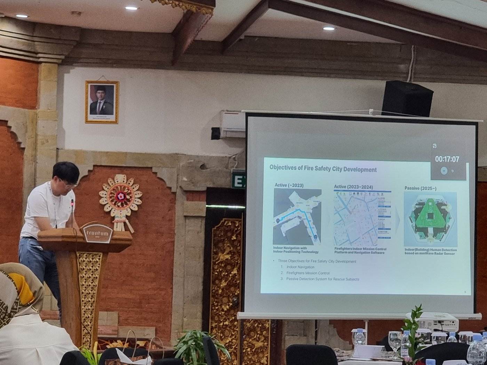
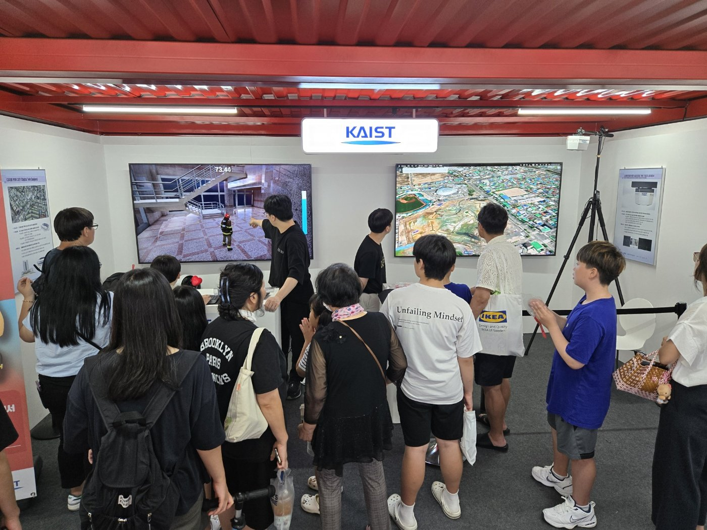
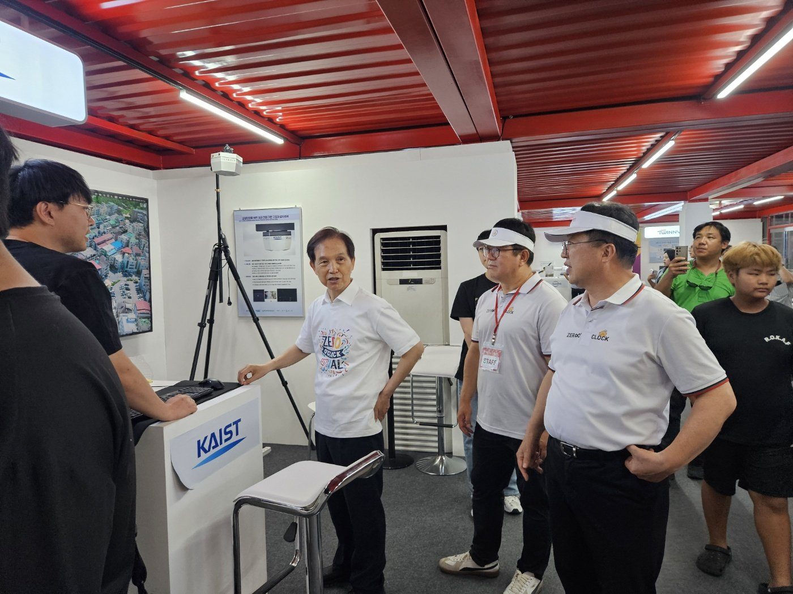
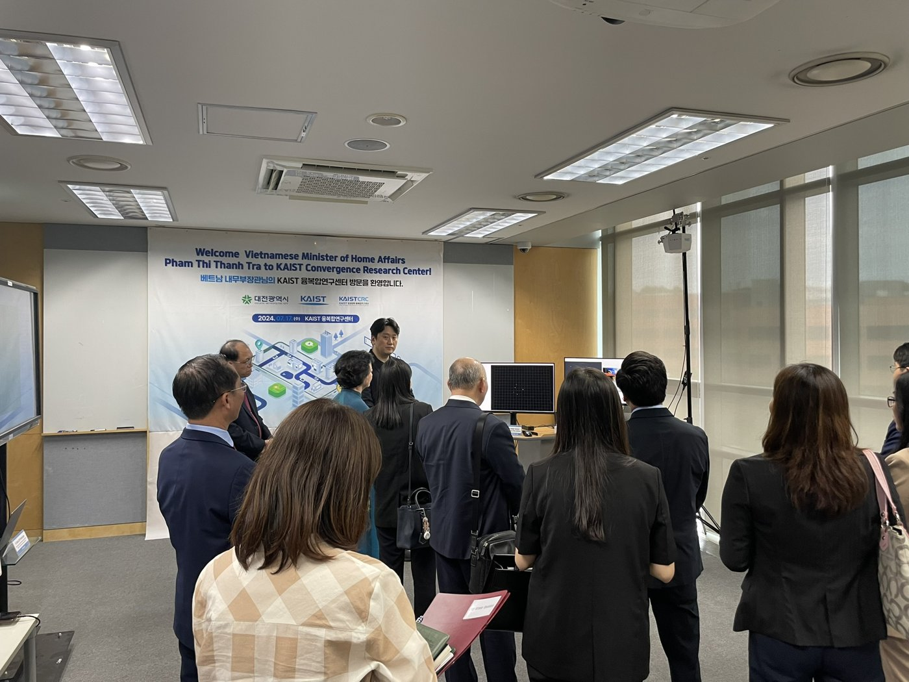
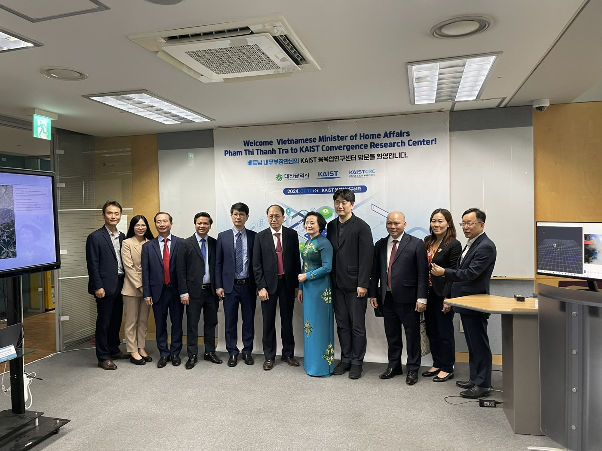
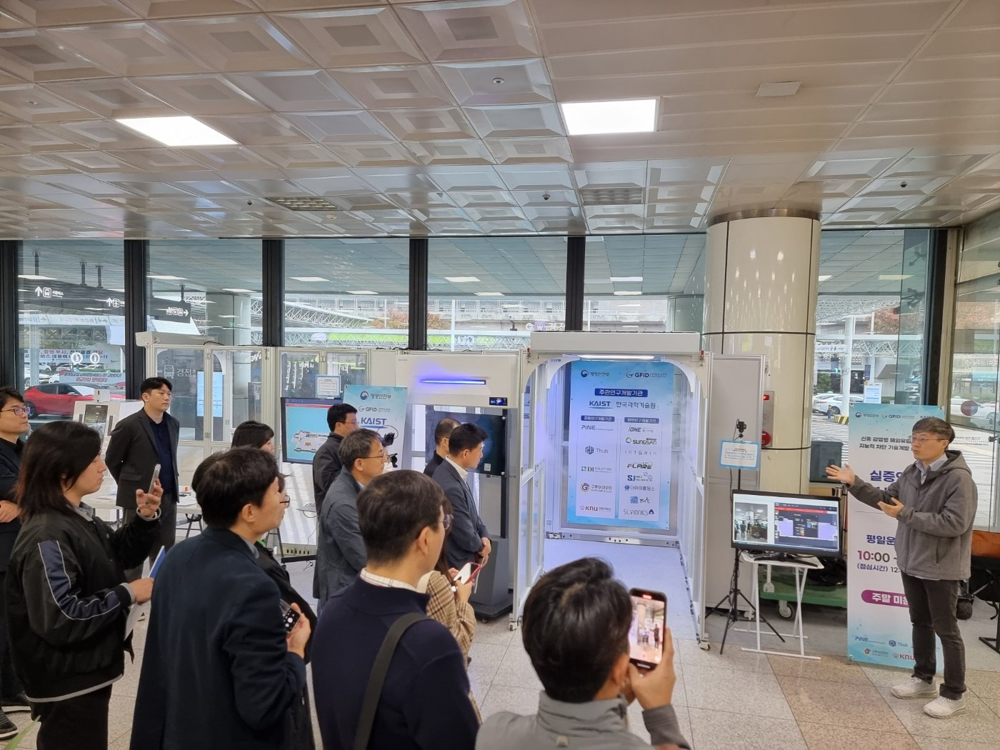
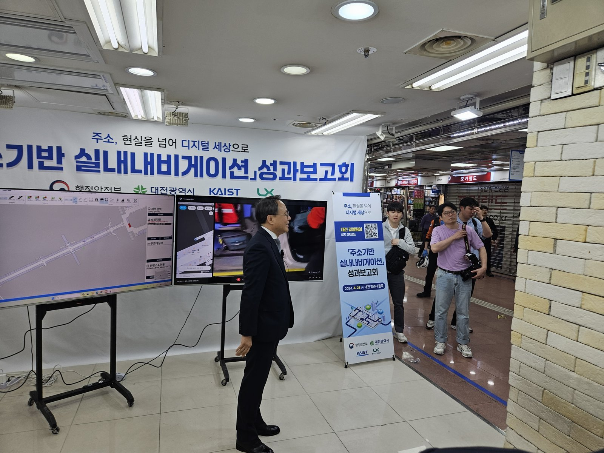

과제 기획회의

연구 인터뷰

프로필 촬영.

발리에서 열린 IEEE APCC 2024 국제학회에서 연구 성과를 구두 발표

소방안전도시 연구를 발표하며 청중에게 결과를 설명

영시축제 KAIST 부스를 찾은 관람객들에게 디지털트윈 시연

대전광역시장과 KAIST 이광형 총장에게 소방 디지털트윈 기술을 직접 설명·시연

베트남 내무부 장관 대표단 방문 시 연구성과를 시연·발표

베트남 내무부 장관 대표단과의 단체 기념 촬영

김해공항에서 진행된 지능형 방역플랫폼(방역터널·수하물 방역기) 현장 실증

대전 역전지하상가 주소기반 실내내비게이션 성과보고회에서 행정안전부 차관에게 현장 시연